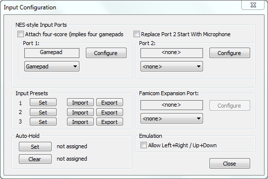
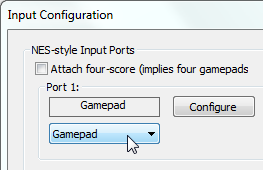
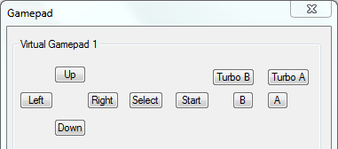
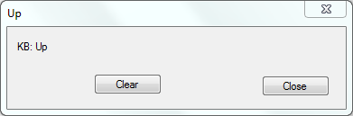
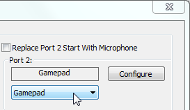
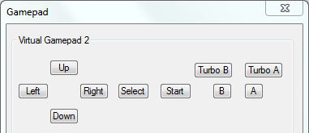

Содержание
Беспроводной или USB геймпад нужно подключать до запуска эмулятора, иначе эмулятор его не увидит.
В эмуляторе выбери Config -> Input. Откроется окно Input Configuration.

Некоторые клавиши управления могут конфликтовать с горячими клавишами эмулятора. После настройки управления, в эмуляторе выбери Config -> Map Hotkeys -> Filter -> Assigned, там отображается список всех назначенных горячих клавиш. Просмотри список, и при необходимости переназначь/удали горячие клавиши, которые пересекаются с твоим управлением игроков. Или же настрой управление на другие клавиши.
В окне Input Configuration, в разделе Port 1 убедись, что включена опция Gamepad.

Некоторые игры могут автоматически переключать эту опцию. Например, игра Arkanoid может включить Arkanoid Paddle, после чего управление перейдет на мышку.
Далее нажми кнопку Configure, откроется окно Gamepad. Управление 1-му игроку настраивается в разделе Virtual Gamepad 1

Кликни на одну из 8-ми кнопок, например кнопку Up (вверх), окроется дополнительное окно Up.

Кнопка Clear сбрасывает настройки кнопки, кнопка Close закрывает окно и сохраняет настройки.
Здесь дважды нажми на клавиатуре/геймпаде ту клавишу, которая будет отвечать за кнопку Up в игре. После двойного нажатия клавиши кнопка будет настроена, и окно Up автоматически закроется.
Аналогичным образом настрой управление на оставшиеся кнопки. После завершения настройки закрой окно Gamepad.
При желании можно назначить до 4-х различных клавиш. Для этого нужно по одному разу нажимать на те клавиши клавиатуры/геймпада, которые тебе нужны. Можно настроить управление одновременно и на клавиатуре, и на геймпаде.
Для завершения настройки дважды нажми на последнюю используемую клавишу, или кликни на кнопку Close. Настройка автоматически закроется, если были настроены все 4 клавиши.
В окне Input Configuration, в разделе Port 2 выбери опцию Gamepad, затем нажми кнопку Configure.

После чего в окне Gamepad настрой управление 2-му игроку в разделе Virtual Gamepad 2.

В окне Input Configuration нажми кнопку Configure в разделе Port 1, затем в окне Gamepad настрой управление 3-му игроку в разделе Virtual Gamepad 3.
В окне Input Configuration нажми кнопку Configure в разделе Port 2, затем в окне Gamepad настрой управление 4-му игроку в разделе Virtual Gamepad 4.